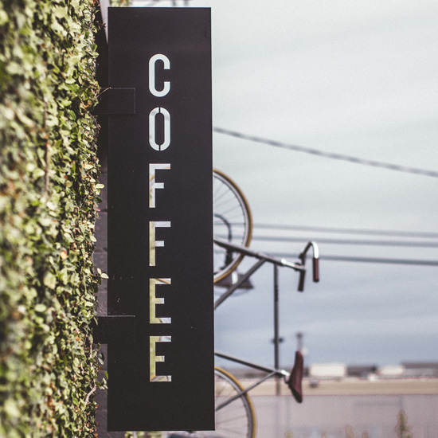

| 店名 | CAFE DE DEKIRU |
|---|---|
| 住所 | 〒123-4567 東京都千代田区神田神保町00000 |
| 電話番号 | Tel: 000-0000-0000 Fax:000-0000-0000 |
| 営業時間 | 07:00～22:30 |
| 定休日 | 不定休 |
| アクセス | 神保町駅／Ａ６番出口 (東京メトロ半蔵門線、都営地下鉄三田線、都営地下鉄新宿線） 徒歩2分 |
| 代表者 | できる 太郎 |

あたたかな空間を楽しんでいただけるカフェです
朝にゆとりのあるひとときを午後のほっとこころ安まる空間をお楽しみいただけるカフェです。